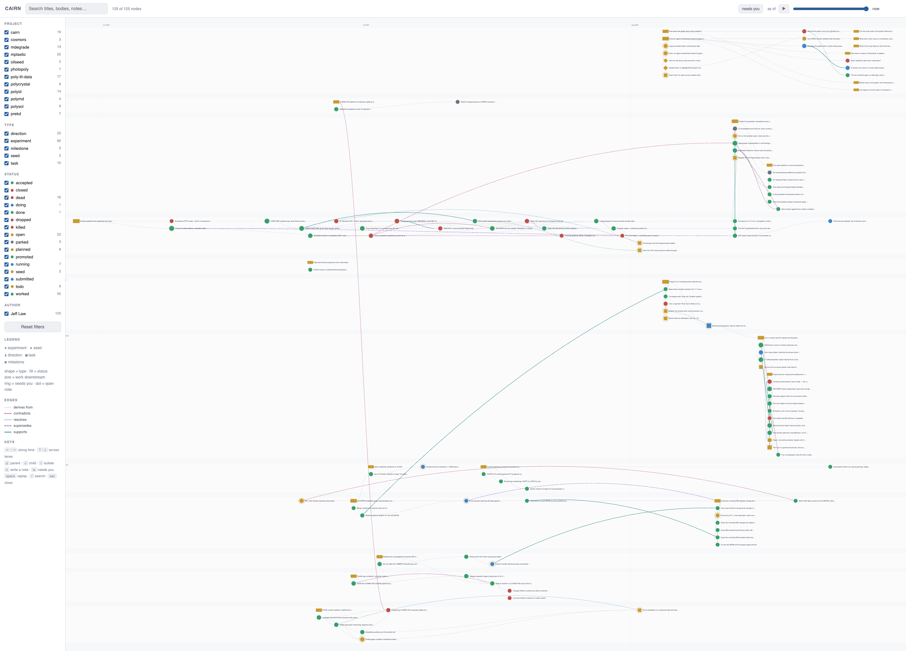

The record that keeps the dead ends.
Cairn is a git-backed graph of research activity across projects — experiments, dead ends, open threads, deadlines — written by the agent doing the work, and rendered as a map you can walk backwards.
The question this exists to answer
“Did we already try this, and what happened?”
Today that question is answered from memory, a Slack thread, and a scratch
directory whose README is three months stale. The half-life is about
six months — after which the honest answer is “I think someone looked at
that.”
The second question is worse, because a wrong answer costs real compute: “what should I do next, and why not the other thing?”
What actually gets lost
Not the results — those end up in papers and dashboards. What gets lost is everything that didn't work, which is most of the work, and the only record of why the current approach is the current approach.
Who pays
The next person to have the same good idea. Frequently that person is you, in November, with the same cluster allocation.
Why the record disappears — three mechanisms, none of them laziness
Every tool we already use garbage-collects the negative result.
The rock every previous attempt died on
A graph at 60% coverage is worse than no graph — because you can't trust a missing node to mean “not tried.” why discipline-based capture fails closed
This has been tried, repeatedly, by people who knew what they were doing. Renku does real compute provenance but has no concept of a hypothesis or a dead end. Variolite and Verdant attacked exactly this problem inside the notebook. Burrito and Hindsight instrumented the whole session.
Each needed a discipline nobody sustains past week three. The failure was never the schema. It was capture cost — the record is written at the moment you least want to write it: when the job just failed and you already know why.
What changed
The agent doing the work can write the record.
It already has the git log, the commit, the host, the failed command and the reason it failed. The one thing it can't infer is what the result means — so that's the only thing it asks you for.
Capture wins
When expressiveness and capture reliability conflict, capture wins. A node with a messy body beats a missing node, every time. Structure is suggested, never enforced — prompting for structure at capture time is how capture dies.
But nothing enters unreviewed
The agent drafts the node and shows it; you approve. An auto-populated graph
nobody has read is the exact failure this project exists to avoid. Anything
written unprompted goes to inbox/ — a junk drawer with no schema,
which is what makes it safe to write to without asking.
Those two rules pull against each other, and that tension is the whole design. Design decisions works through where each one wins.
What you get
One self-contained HTML file, opened from disk.
No server, no CDN, no build step beyond make build. Layout is
time-ordered rather than force-directed: x is the creation date, y is a
project lane. Colour is status, shape is type — so the green/red ratio in
a lane is the honest picture of a project, readable from across the room.

Where to go next
Start here.
The model
Five node types, two kinds of edge, and the four typed relations. The whole schema fits on one page — that's deliberate.
Using it
Install, the session loop, and the four ways work actually starts: backfill, a new experiment, a literature review, or a bench.
The map
Lineage isolation, the replay slider, and the live demo you can click through.
Design decisions
Nine settled calls, what Cairn deliberately isn't, and the three open questions that would make its author abandon it.
Notebook
What's working, what isn't, and what got refuted since the last entry.
The one dependency
Python ≥ 3.7 with PyYAML. Nothing else, ever — see install.